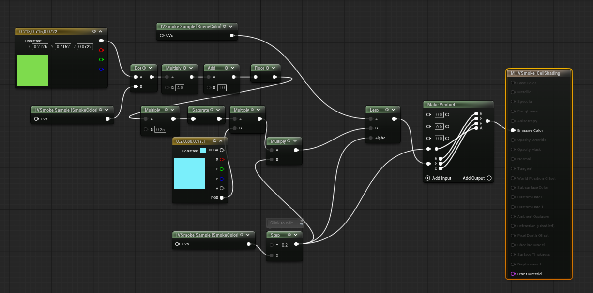
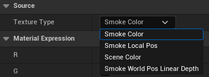

Loading...
Searching...
No Matches
Custom Material Guide
Material
You must define how you want to mix the Scene and Smoke textures.
Demo Example

CustomMaterial_image.png
- Material Domain : PostProcess

CustomMaterial_image1.png
Expanssion Node
- You can search and add the IVSmoke_TextureSample node.

IVSmoke_CustomMaterial_ExpanssionNode.png
- The IVSmoke_TextureSample node is configured as follows.

- Texture Type
- SmokeColor : Smoke color texture (SmokeAlbedo(R, G, B), SmokeAlpha)
- SmokeLocalPos : Smoke local position texture (Local Position(x, y, z), 0)
- SceneColor : Scene Color Texture
- SmokeWorldPosLinearDepth : Smoke world position and linear depth (World Position (x, y, z), Linear Depth)
- These textures are mapped to PostProcessInput[0, 1, 2, 4] on the SceneTexture node..

IVSmoke_CustomMaterial_ExpanssionNode_ColorMask.png
- Color Mask : Choose the color channel you want and use it
Visual Material Preset
Create
Content Drawer → Right-click → Miscellaneous → Data Asset → Select [IVSmoke Visual Material Preset]


Configuration

- Smoke Visual Material: User-custom smoke material slot
- If empty, it will be rendered through a simple composite shader.
- UpSample Filter Type : This filter is applied after upsampling the raymarching results.
- None : Disable filters.
- Sharpen: Enhances edges and details, making smoke contours more defined.
- Blur: Softens with Gaussian blur for natural, smooth smoke appearance.
- Median: Removes noise while preserving edges for clean smoke rendering.
Project Setting Visual Material Preset

- Search project setting for IVSmoke
- In the Rendering section, insert it into the Smoke Visual Material Preset slot.
Example
Demo Material Path : Plugins → IVSmoke → DataAssets → D_IVSmoke_VisualMaterialPreset

CustomMaterial_image3.png
{kind=link}
Copyright (c) 2026, Team SDB. All rights reserved.